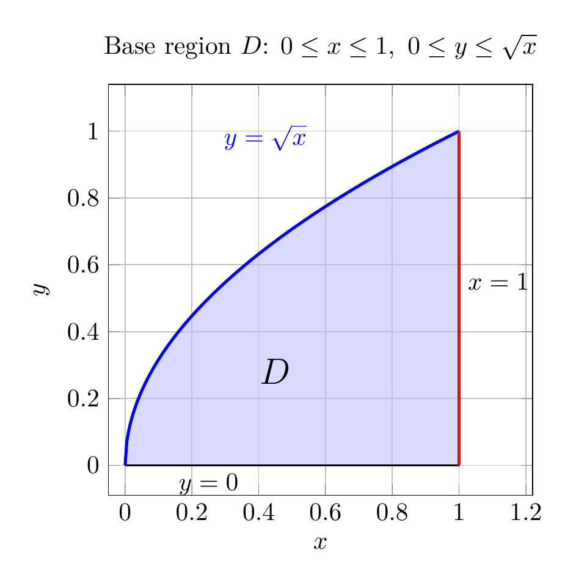
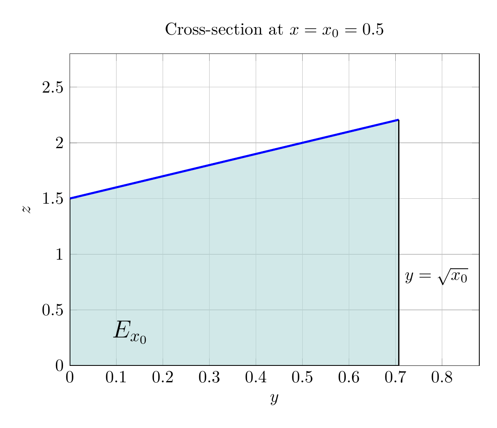
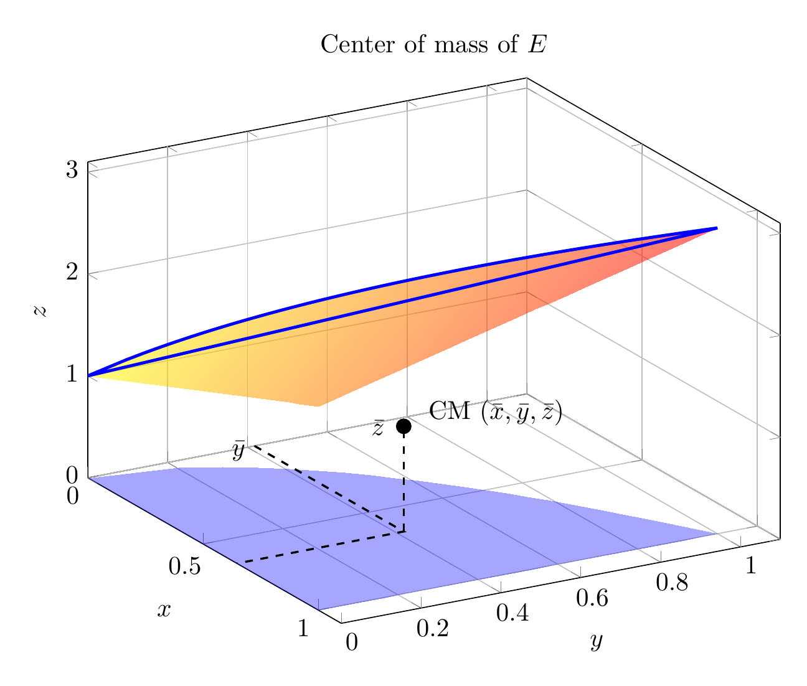
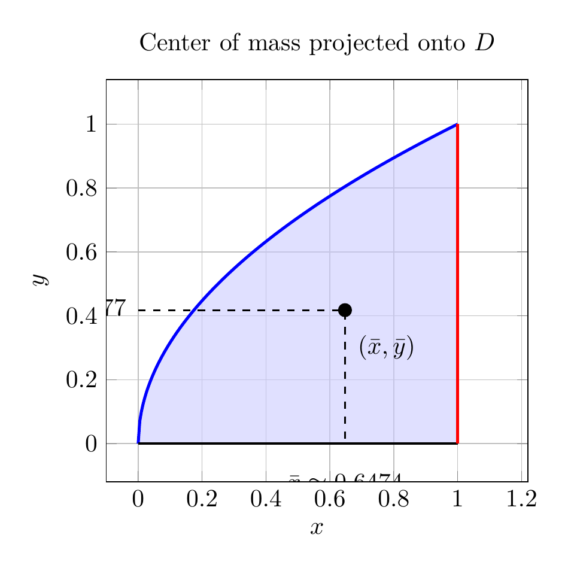

Please solve the problem in the following image.
(Image `20260928_145910_999892_utc_0800_0.png`. Alt text: Image: human_20260928_145910_999892_utc_0800)
20260928_145910_999892_utc_0800_0.png
End of problem
Answer
## Setting up the solid
Let
$$
D=\{(x,y):0\le x\le 1,\ 0\le y\le \sqrt{x}\}
$$
be the base region in the $xy$-plane. The solid is the vertical region above $D$ and under the plane
$$
z=1+x+y,\qquad \rho(x,y,z)=2.
$$
Because the density is constant, the center of mass coincides with the geometric centroid:
$$
(\bar x,\bar y,\bar z)=\frac{1}{V}\iiint_E (x,y,z)\,dV,
$$
where $V$ is the volume of $E$. Therefore we first compute
$$
M=\iiint_E \rho\,dV=2\iiint_E dV.
$$
A 3D view of the solid is shown below.
---
\documentclass[border=10pt]{standalone}
\usepackage{pgfplots}
\pgfplotsset{compat=1.18}
\usepgfplotslibrary{fillbetween}
\begin{document}
\begin{tikzpicture}
\begin{axis}[
axis equal image,
xmin=-0.05,xmax=1.22,ymin=-0.09,ymax=1.14,
xlabel={$x$}, ylabel={$y$},
title={Base region $D$: $0\le x\le1,\ 0\le y\le\sqrt{x}$},
grid=both,
legend pos=north west,
samples=200,
]
\addplot[name path=A, domain=0:1, blue, very thick] {sqrt(x)};
\addplot[name path=B, domain=0:1, black, thick] {0};
\addplot[blue!25, opacity=0.6] fill between[of=A and B];
\addplot[red, very thick] coordinates {(1,0) (1,1)};
\node[right] at (axis cs:1,0.55) {$x=1$};
\node at (axis cs:0.45,0.28) {\Large $D$};
\node[blue] at (axis cs:0.42,0.98) {$y=\sqrt{x}$};
\node[below] at (axis cs:0.25,0.0) {$y=0$};
\end{axis}
\end{tikzpicture}
\end{document}

pgfplots_1.png
---
Using the order $dz\,dy\,dx$, we have
$$
M=2\int_0^1\int_0^{\sqrt{x}}\int_0^{1+x+y}dz\,dy\,dx.
$$
The inner integral is
$$
\int_0^{1+x+y}dz=1+x+y.
$$
Thus
$$
M=2\int_0^1\int_0^{\sqrt{x}}(1+x+y)\,dy\,dx.
$$
Compute the inner $y$-integral:
$$
\int_0^{\sqrt{x}}(1+x+y)\,dy
=\left[(1+x)y+\frac{y^2}{2}\right]_0^{\sqrt{x}}
=x^{1/2}+x^{3/2}+\frac{x}{2}.
$$
Therefore
$$
M=2\int_0^1\left(x^{1/2}+x^{3/2}+\frac{x}{2}\right)dx
=2\left(\frac{2}{3}+\frac{2}{5}+\frac{1}{4}\right)
=2\cdot\frac{79}{60}
=\frac{79}{30}.
$$
So the mass is $M=\frac{79}{30}\approx2.6333$.
The volume by itself is $V=\frac{M}{2}=\frac{79}{60}$.
---
For a fixed value of $x$, the cross-section in the $yz$-plane is a vertical trapezoid-like region with $0\le y\le \sqrt{x}$ and $0\le z\le 1+x+y$. The example $x=0.5$ below helps visualize the triple integral.
---
\documentclass[border=10pt]{standalone}
\usepackage{pgfplots}
\pgfplotsset{compat=1.18}
\usepgfplotslibrary{fillbetween}
\begin{document}
\begin{tikzpicture}
\begin{axis}[
width=10cm, height=8cm,
xlabel={$y$}, ylabel={$z$},
xmin=0,xmax=0.88,ymin=0,ymax=2.8,
title={Cross-section at $x=x_0=0.5$},
grid=both,
samples=200,
]
\addplot[name path=top, domain=0:0.7071, blue, very thick] {1.5+x};
\addplot[name path=bottom, domain=0:0.7071, black, thick] {0};
\addplot[teal!30, opacity=0.6] fill between[of=top and bottom];
\addplot[black, thick] coordinates {(0,0) (0,1.5)};
\addplot[black, thick] coordinates {(0.7071,0) (0.7071,2.2071)};
\node at (axis cs:0.13,0.3) {\Large $E_{x_0}$};
\node[right] at (axis cs:0.7071,0.8) {$y=\sqrt{x_0}$};
\node[below] at (axis cs:0.35,0) {$z=0$};
\end{axis}
\end{tikzpicture}
\end{document}

pgfplots_2.png
---
## Center of mass
### The $x$-coordinate
$$
\bar x=\frac{2}{M}\int_0^1\int_0^{\sqrt{x}}x(1+x+y)\,dy\,dx
=\frac{1}{V}\int_0^1\int_0^{\sqrt{x}}x(1+x+y)\,dy\,dx.
$$
The inner integral is
$$
\int_0^{\sqrt{x}}(x+x^2+xy)\,dy
=x^{3/2}+x^{5/2}+\frac{x^2}{2}.
$$
Hence
$$
\int_0^1\left(x^{3/2}+x^{5/2}+\frac{x^2}{2}\right)dx
=\frac{2}{5}+\frac{2}{7}+\frac{1}{6}
=\frac{179}{210}.
$$
Dividing by $V=\frac{79}{60}$ gives
$$
\bar x=\frac{179/210}{79/60}
=\frac{179}{210}\cdot\frac{60}{79}
=\frac{358}{553}\approx0.6474.
$$
### The $y$-coordinate
$$
\bar y=\frac{1}{V}\int_0^1\int_0^{\sqrt{x}}y(1+x+y)\,dy\,dx.
$$
The inner integral is
$$
\int_0^{\sqrt{x}}(y+xy+y^2)\,dy
=\frac{x}{2}+\frac{x^2}{2}+\frac{x^{3/2}}{3}.
$$
Thus
$$
\int_0^1\left(\frac{x}{2}+\frac{x^2}{2}+\frac{x^{3/2}}{3}\right)dx
=\frac{1}{4}+\frac{1}{6}+\frac{2}{15}
=\frac{11}{20}.
$$
So
$$
\bar y=\frac{11/20}{79/60}
=\frac{11}{20}\cdot\frac{60}{79}
=\frac{33}{79}\approx0.4177.
$$
### The $z$-coordinate
$$
\bar z=\frac{1}{V}\int_0^1\int_0^{\sqrt{x}}\int_0^{1+x+y}z\,dz\,dy\,dx.
$$
Since
$$
\int_0^{1+x+y}z\,dz=\frac{(1+x+y)^2}{2},
$$
we need the double integral of $(1+x+y)^2$ over $D$. Expanding,
$$
(1+x+y)^2=(1+x)^2+2(1+x)y+y^2.
$$
Carrying out the $y$-integration from $0$ to $\sqrt{x}$,
$$
\int_0^{\sqrt{x}}(1+x+y)^2\,dy
=x^{1/2}+\frac{7}{3}x^{3/2}+x^{5/2}+x+x^2.
$$
Then integrating in $x$,
$$
\int_0^1\left(x^{1/2}+\frac{7}{3}x^{3/2}+x^{5/2}+x+x^2\right)dx
=\frac{2}{3}+\frac{14}{15}+\frac{2}{7}+\frac{1}{2}+\frac{1}{3}
=\frac{571}{210}.
$$
Therefore
$$
\bar z=\frac{(1/2)(571/210)}{79/60}
=\frac{571/420}{79/60}
=\frac{571}{420}\cdot\frac{60}{79}
=\frac{571}{553}\approx1.0325.
$$
Notice that the point lies inside the solid: $\bar y\approx0.4177\le\sqrt{0.6474}\approx0.8046$ and $\bar z\approx1.0325\le1+0.6474+0.4177\approx2.0651$.
---
\documentclass[border=10pt]{standalone}
\usepackage{pgfplots}
\pgfplotsset{compat=1.18}
\begin{document}
\begin{tikzpicture}
\begin{axis}[
view={60}{28},
xlabel={$x$}, ylabel={$y$}, zlabel={$z$},
xmin=0,xmax=1.1,ymin=0,ymax=1.1,zmin=0,zmax=3.1,
title={Center of mass of $E$},
grid=major,
width=11cm,height=9cm,
]
\addplot3[surf, domain=0:1, y domain=0:1, samples=25, samples y=25,
opacity=0.55, color=blue!60, shader=interp, z buffer=sort]
({x}, {y*sqrt(x)}, {1+x+y*sqrt(x)});
\addplot3[surf, domain=0:1, y domain=0:1, samples=25, samples y=25,
opacity=0.35, color=orange!60, shader=interp, z buffer=sort]
({x}, {y*sqrt(x)}, {0});
\addplot3[domain=0:1, samples=120, very thick, blue] ({x}, {sqrt(x)}, {1+x+sqrt(x)});
% centroid marker
\addplot3[only marks, mark=*, mark size=2.8pt, black] coordinates {(0.6474,0.4177,1.0325)};
% projection lines
\draw[dashed, thick] (axis cs:0.6474,0.4177,0) -- (axis cs:0.6474,0.4177,1.0325);
\draw[dashed, thick] (axis cs:0,0.4177,0) -- (axis cs:0.6474,0.4177,0) -- (axis cs:0.6474,0,0);
\node[right] at (axis cs:0.66,0.45,1.16) {CM $(\bar x,\bar y,\bar z)$};
\node[left] at (axis cs:0.0,0.4177,-0.05) {$\bar y$};
\node[below] at (axis cs:0.6474,0,-0.05) {$\bar x$};
\node[left] at (axis cs:0.60,0.42,0.95) {$\bar z$};
\end{axis}
\end{tikzpicture}
\end{document}

pgfplots_3.png
---
The center of mass projected onto the base region $D$ is shown below. The dashed lines show the $x$- and $y$-coordinates of the centroid.
---
\documentclass[border=10pt]{standalone}
\usepackage{pgfplots}
\pgfplotsset{compat=1.18}
\usepgfplotslibrary{fillbetween}
\begin{document}
\begin{tikzpicture}
\begin{axis}[
axis equal image,
xmin=-0.10,xmax=1.22,ymin=-0.12,ymax=1.14,
xlabel={$x$}, ylabel={$y$},
title={Center of mass projected onto $D$},
grid=both,
samples=200,
]
\addplot[name path=A, domain=0:1, blue, very thick] {sqrt(x)};
\addplot[name path=B, domain=0:1, black, thick] {0};
\addplot[blue!20, opacity=0.6] fill between[of=A and B];
\addplot[red, very thick] coordinates {(1,0) (1,1)};
\draw[dashed, thick] (axis cs:0,0.4177) -- (axis cs:0.6474,0.4177) -- (axis cs:0.6474,0);
\addplot[only marks, mark=*, mark size=2.6pt, black] coordinates {(0.6474,0.4177)};
\node[right] at (axis cs:0.66,0.30) {$(\bar x,\bar y)$};
\node[below] at (axis cs:0.6474,-0.07) {$\bar x\approx0.6474$};
\node[left] at (axis cs:-0.01,0.4177) {$\bar y\approx0.4177$};
\end{axis}
\end{tikzpicture}
\end{document}

pgfplots_4.png
---
## Final results
Since the density is constant, the center of mass is the centroid of $E$.
$$
\boxed{M=\frac{79}{30}\approx2.6333,\qquad (\bar x,\bar y,\bar z)=\left(\frac{358}{553},\frac{33}{79},\frac{571}{553}\right)\approx(0.6474,0.4177,1.0325)}
$$
Thus the solid has mass about $2.6333$ units, and its center of mass is approximately $(0.6474,\,0.4177,\,1.0325)$.